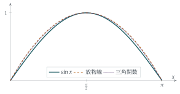

STEP II 2014、第2問
先に進む前に問題を読んでおこう。問題は STEP Support Programme の問題データベースにある： step.maths.org/questions/14-s2-q2
導入
\(\pi\) が \(3\) より少し大きいことは、どの生徒も知っている。では、その上界を証明するにはどうすればよいだろうか。アルキメデス（Archimedes）は多角形を用いてこれを行った。この問題はまったく思いがけない方法でそれを行う。関数についての一般的な不等式（inequality）をとり、そこに単純な放物線を代入して、\(\pi^2 \leq 10\) を読み取るのである。関数の選び方を変えると、有名な近似 \(\pi \leq \frac{22}{7}\) が得られる。
不等式 \((*)\) はウィルティンガーの不等式（Wirtinger’s inequality）である。これは、両端で \(0\) に固定された関数は、「急」でなければ「大きく」なれないことを述べている。その背後には、数理物理学の中心的な考え方の一つがある。弦の振動、量子粒子のエネルギー準位、そして固有値（eigenvalue）の理論である。
取りかかる前に
\([0, \pi]\) の両端で \(0\) となる関数が、中央で大きな値をとるならば、なぜ急でなければならないのだろうか。条件 \(\mathrm{f}(0) = \mathrm{f}(\pi) = 0\) はなぜ重要なのだろうか。
距離 \(\pi\) の範囲内で \(0\) からある高さ \(H\) まで上がり、再び \(0\) まで下がるには、関数は平均して少なくとも \(H/(\pi/2)\) の割合で上昇しなければならない。したがって、その導関数（derivative）がいたるところで小さいということはありえない。端での条件がなければ、このような制約はない。定数関数は導関数が \(0\) のまま、いくらでも大きくできる。不等式 \((*)\) は、「大きさ」と「急さ」を2乗の積分で測ることによって、このことを精密に述べたものである。
順を追って解く
段階 1 正弦波
\(\int_0^\pi \sin^2 nx\,\mathrm{d}x\) はいくらか。また \(\int_0^\pi \cos^2 nx\,\mathrm{d}x\) はいくらか。（\(\sin^2\theta = \frac12(1 - \cos 2\theta)\) を用いよ。）
\(\int_0^\pi \cos 2nx\,\mathrm{d}x = 0\) であるから、どちらも \(\frac\pi2\) である。\(\mathrm{f}(x) = \sin nx\) とすると \(\mathrm{f}'(x) = n\cos nx\) であるから、\(n \geq 1\) より \[\int_0^\pi \mathrm{f}^2 = \frac\pi2 \leq \frac{n^2\pi}{2} = \int_0^\pi (\mathrm{f}')^2,\] が成り立つ。■ \(n = 1\) のとき等号が成り立つことに注意しよう。つまり、この不等式はこれ以上改良できないほど精密なのである。
段階 2 端の条件が重要である
\(\mathrm{f}(0) \neq 0\) であって \((*)\) が成り立たない単純な関数を見つけよ。次に、\(\mathrm{f}(0) = 0\) であるが \(\mathrm{f}(\pi) \neq 0\) であるような関数を見つけよ。
定数関数 \(\mathrm{f}(x) = 1\) は \(\mathrm{f}(0) = 1 \neq 0\) を満たし、\(\int_0^\pi 1\,\mathrm{d}x = \pi > 0 = \int_0^\pi 0\,\mathrm{d}x\) である。
2つ目については、\(\mathrm{f}(x) = x\) は \(\mathrm{f}(0) = 0\) であるが \(\mathrm{f}(\pi) = \pi\) であり、 \[\int_0^\pi x^2\,\mathrm{d}x = \frac{\pi^3}{3} \approx 10.3 > \pi = \int_0^\pi 1^2\,\mathrm{d}x.\] となる。よって、どちらの場合も \((*)\) は成り立たない。■
段階 3 放物線
\(x = 0\) と \(x = \pi\) で \(0\) となる2次式はどれか。（定数倍を除けば一つしかない。なぜ定数倍は問題にならないのだろうか。）
その2次式は \(x(\pi - x)\) の定数倍でなければならない。また \(\mathrm{f}\) を定数 \(k\) 倍すると \((*)\) の両辺はともに \(k^2\) 倍されるので、\(\mathrm{f}(x) = x(\pi - x)\)、すなわち \(a = -1\), \(b = \pi\), \(c = 0\) としてよい。このとき \(\mathrm{f}'(x) = \pi - 2x\) であり、置換 \(u = x - \frac\pi2\)（これにより両方の被積分関数（integrand）が偶関数（even function）になる）を用いると、 \[\begin{aligned} \int_0^\pi x^2(\pi - x)^2\,\mathrm{d}x &= \int_{-\pi/2}^{\pi/2} \left( \frac{\pi^2}{4} - u^2 \right)^2 \mathrm{d}u = \frac{\pi^5}{30}, \\ \int_0^\pi (\pi - 2x)^2\,\mathrm{d}x &= \int_{-\pi/2}^{\pi/2} 4u^2\,\mathrm{d}u = \frac{\pi^3}{3}. \end{aligned}\] となる。（1つ目については、\(h = \frac\pi2\) として \(\int_{-h}^{h}(h^2 - u^2)^2\,\mathrm{d}u = 2\bigl(h^5 - \frac23 h^5 + \frac15 h^5\bigr) = \frac{16}{15}h^5\) である。）したがって \((*)\) は \(\frac{\pi^5}{30} \leq \frac{\pi^3}{3}\)、すなわち \[\pi^2 \leq 10. \qed\] を意味する。
段階 4 三角関数による選択
\(\mathrm{f}(x) = p\sin\frac12 x + q\cos\frac12 x + r\) に対して、\(\mathrm{f}(0) = 0\) と \(\mathrm{f}(\pi) = 0\) は \(p\), \(q\), \(r\) にどのような条件を課すか。
\(\mathrm{f}(0) = q + r = 0\) かつ \(\mathrm{f}(\pi) = p + r = 0\) である。よって \(p = q = -r\) であり、定数倍を調整して \(\mathrm{f}(x) = \sin\frac x2 + \cos\frac x2 - 1\) とする。
この関数について \(\int_0^\pi \mathrm{f}^2\) と \(\int_0^\pi (\mathrm{f}')^2\) を計算せよ。\(\pi\) についてどのような不等式が得られるか。
\(s = \sin\frac x2\), \(c = \cos\frac x2\) とおく。すると \((s + c)^2 = 1 + 2sc = 1 + \sin x\) であるから、 \[\mathrm{f}^2 = (s + c)^2 - 2(s + c) + 1 = 2 + \sin x - 2\sin\tfrac x2 - 2\cos\tfrac x2.\] となる。\(\int_0^\pi \sin x = 2\)、\(\int_0^\pi \sin\frac x2 = 2\)、\(\int_0^\pi \cos\frac x2 = 2\) を用いると、 \[\int_0^\pi \mathrm{f}^2\,\mathrm{d}x = 2\pi + 2 - 4 - 4 = 2\pi - 6.\] である。また \(\mathrm{f}' = \frac12(c - s)\) であるから \((\mathrm{f}')^2 = \frac14(1 - \sin x)\) となり、\(\int_0^\pi (\mathrm{f}')^2\,\mathrm{d}x = \frac14(\pi - 2)\) である。ここで \((*)\) より \[2\pi - 6 \leq \frac{\pi - 2}{4} \quad\Longrightarrow\quad 8\pi - 24 \leq \pi - 2 \quad\Longrightarrow\quad \pi \leq \frac{22}{7}. \qed\] が得られる。
段階 5 どちらがよいか
\(\pi \leq \frac{22}{7}\) から \(\pi^2 \leq \frac{484}{49} \approx 9.878\) が得られ、これは \(\pi^2 \leq 10\) よりもよい。（真の値は \(\pi^2 \approx 9.870\) である。）これは \(\frac{22}{7}\) が \(\pi\) の上界であることを証明しているのであって、それが \(\pi\) に等しくないことは、まったく別の積分を用いて第 4.3 節で示される。
振り返り
一般的な不等式と、特定の関数。試験関数を選ぶことで、すべての関数についての主張が、ある一つの数についての主張に変わった。
スケーリング。\((*)\) の両辺は同じ倍率で変化するので、それぞれの関数族における自由な定数を固定することができた。
よりよい試験関数は、よりよい評価を与える。試験関数が極値をとる場合である \(\sin x\) に近いほど、不等式は等号に近くなり、評価もよくなる（図 3.7.1）。

背後にある数学
なぜ \((*)\) は成り立つのだろうか。大学では、\([0, \pi]\) 上の「性質のよい」関数で両端で \(0\) となるものは、フーリエ正弦級数（Fourier sine series） \[\mathrm{f}(x) = b_1\sin x + b_2\sin 2x + b_3\sin 3x + \cdots.\] として表せることを学ぶ。\(m \neq n\) のとき \(\int_0^\pi \sin mx\sin nx\,\mathrm{d}x = 0\) であるから、2乗して積分すると交差項はすべて消え、 \[\int_0^\pi \mathrm{f}^2 = \frac\pi2\bigl(b_1^2 + b_2^2 + b_3^2 + \cdots\bigr), \qquad \int_0^\pi (\mathrm{f}')^2 = \frac\pi2\bigl(1^2 b_1^2 + 2^2 b_2^2 + 3^2 b_3^2 + \cdots\bigr).\] が得られる。右側の各項は左側の対応する項以上であるから、これで \((*)\) が証明され、さらに等号が成り立つのは \(\mathrm{f}\) が \(\sin x\) の定数倍であるときに限ることもわかる。問題の小問 (i) は、項が一つだけの場合にあたる。
振動する弦と量子粒子
比 \(\int (\mathrm{f}')^2 \big/ \int \mathrm{f}^2\) はレイリー商（Rayleigh quotient）と呼ばれ、\((*)\) は、\(0\) と \(\pi\) で固定された関数に対して、この比のとりうる最小値が \(1\) であることを述べている。この数には物理的な意味がある。両端を固定された弦では、\(\int (\mathrm{f}')^2\) は伸びのエネルギーを、\(\int \mathrm{f}^2\) は変位の大きさを表し、この比の最小値が、弦の出せる最も低い音を決める。量子力学では、同じ最小値が、箱に閉じ込められた粒子の最低エネルギーとなる。両端で固定された波は曲がらざるをえないので、これは \(0\) にはなりえない。レイリー卿（Lord Rayleigh）はまさにこの技法、すなわち試験関数を推測して比を計算するという方法を用いて、振動系の振動数を評価した。極値の場合が最小値を与えるので、どのような推測も真の最低振動数の上界を与え、よい推測は非常に精度の高い上界を与えるのである。
変分法
積分の比を最小にする関数を求めることは、変分法（calculus of variations）の問題である。そこでは未知のものが数ではなく、関数全体である。ここでの最小化関数 \(\sin x\) は微分方程式（differential equation）\(\mathrm{f}'' + \mathrm{f} = 0\) を満たすが、これは偶然ではない。積分を最小化すると、必ず最小化関数についての微分方程式が導かれるのである。この考え方には第 4.7 節で再び立ち返る。
思考のスキル
ある関数のクラスに属するすべての関数について成り立つ不等式は、巧みに選んだ関数に適用することで、特定の数についての情報を与えることができる。
技は選び方にある。極値の場合に近い試験関数（test function）は、ほぼ最良の結果を与える。この考え方は、固有値の評価から有限要素法（finite element method）に至るまで、解析学、物理学、工学を貫いている。
次の一歩
4次式。\((*)\) で \(\mathrm{f}(x) = x^2(\pi - x)^2\) を用いよ。これからは \(\pi^2 \leq 12\) しか得られないことを示せ。なぜこの試験関数は放物線より劣るのだろうか。（その形を \(\sin x\) と比べてみよ。）
2つの正弦波。\(\mathrm{f}(x) = \sin x + \sin 2x\) について、両辺を計算して \((*)\) を直接確かめよ。
別の区間。置換によって、\(\mathrm{g}(0) = \mathrm{g}(L) = 0\) ならば \(\displaystyle\int_0^L \mathrm{g}^2 \leq \frac{L^2}{\pi^2}\int_0^L (\mathrm{g}')^2\) であることを示せ。これは長さの異なる弦について何を意味するか。
レイリーの方法。 発展 \(\mathrm{f}(x) = x(\pi - x) + \lambda x^2(\pi - x)^2\) とし、\(\pi^2\) に対する評価ができるだけよくなるように \(\lambda\) を選べ。（計算は重い。数式処理システムを使うとよい。）
さらに学ぶために
T. W. Körner, Fourier Analysis（Cambridge University Press）。フーリエ級数とその応用について、ケンブリッジの解析学者が書いた、すばらしく話題豊富な本である。
Hardy, Littlewood & Pólya, Inequalities（Cambridge University Press）。第 7 章でウィルティンガーの不等式とその仲間を論じている。
Richard Feynman, The Feynman Lectures on Physics、第 II 巻第 19 章（「The principle of least action」、最小作用の原理）。積分の最小化についてのファインマン（Feynman）の講義で、全編を通して物理的直観に満ちている。オンラインで無料で読める。